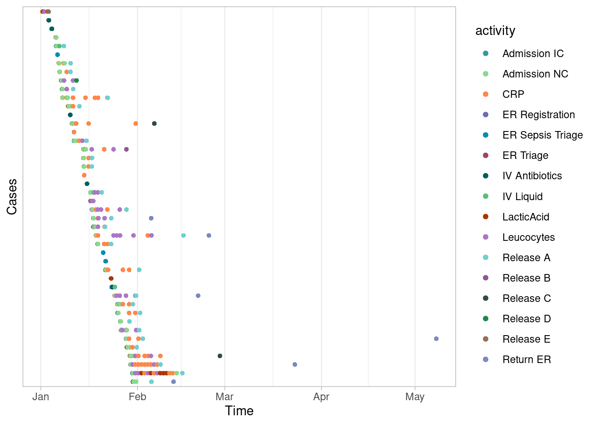
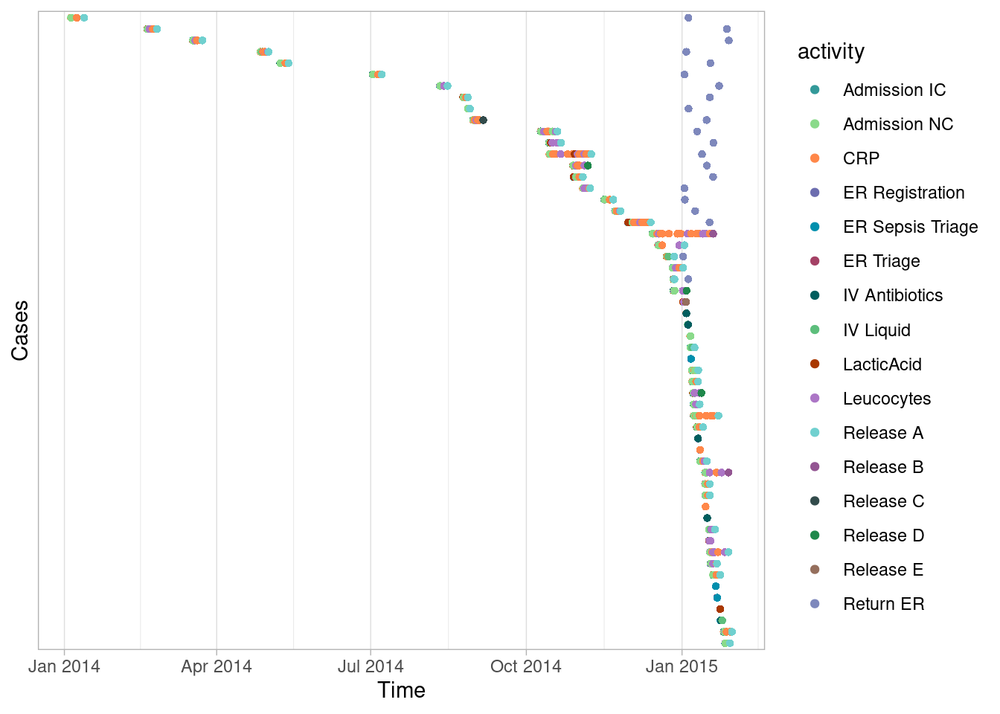
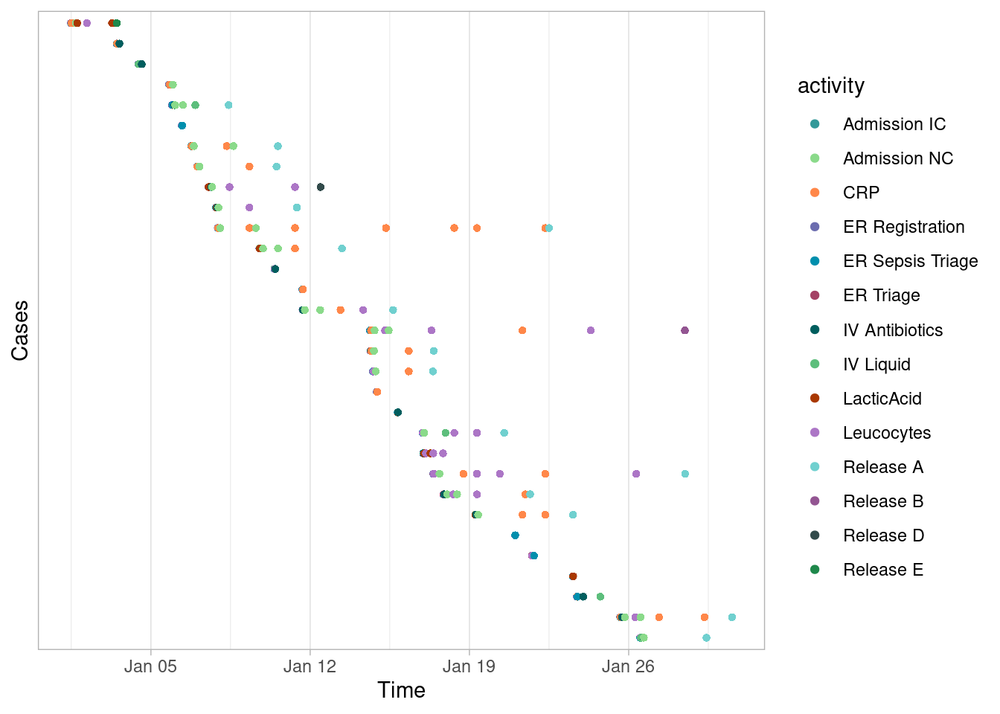

Filter case
library(bupaR)Case filters
Activity presence
When looking at control-flow, we can select cases that contain a specific activity, for instance a X-Ray scan.
patients %>%
filter_activity_presence("X-Ray") %>%
traces## # A tibble: 3 × 3
## trace absol…¹ relat…²
## <chr> <int> <dbl>
## 1 Registration,Triage and Assessment,X-Ray,Discuss Results,Chec… 258 0.989
## 2 Registration,Triage and Assessment,X-Ray 2 0.00766
## 3 Registration,Triage and Assessment,X-Ray,Discuss Results 1 0.00383
## # … with abbreviated variable names ¹absolute_frequency, ²relative_frequencyOr that don’t have a specific activity.
patients %>%
filter_activity_presence("X-Ray", reverse = T) %>%
traces## # A tibble: 4 × 3
## trace absol…¹ relat…²
## <chr> <int> <dbl>
## 1 Registration,Triage and Assessment,Blood test,MRI SCAN,Discus… 234 0.979
## 2 Registration,Triage and Assessment,Blood test,MRI SCAN,Discus… 2 0.00837
## 3 Registration,Triage and Assessment 2 0.00837
## 4 Registration,Triage and Assessment,Blood test 1 0.00418
## # … with abbreviated variable names ¹absolute_frequency, ²relative_frequencyWe can also test more than one activity. In this case, we can require
“all”, “one_of” or “none” of them to be present, through setting the
argument method correctly.
For example, there are no cases that have both X-Ray and MRI-SCAN
patients %>%
filter_activity_presence(c("X-Ray", "MRI SCAN"), method = "all") %>%
traces## [1] trace absolute_frequency relative_frequency
## <0 rows> (or 0-length row.names)Almost all have on of them.
patients %>%
filter_activity_presence(c("X-Ray", "MRI SCAN"), method = "one_of") %>%
traces## # A tibble: 5 × 3
## trace absol…¹ relat…²
## <chr> <int> <dbl>
## 1 Registration,Triage and Assessment,X-Ray,Discuss Results,Chec… 258 0.519
## 2 Registration,Triage and Assessment,Blood test,MRI SCAN,Discus… 234 0.471
## 3 Registration,Triage and Assessment,Blood test,MRI SCAN,Discus… 2 0.00402
## 4 Registration,Triage and Assessment,X-Ray 2 0.00402
## 5 Registration,Triage and Assessment,X-Ray,Discuss Results 1 0.00201
## # … with abbreviated variable names ¹absolute_frequency, ²relative_frequencyAnd 3 have none of them.
patients %>%
filter_activity_presence(c("X-Ray", "MRI SCAN"), method = "none") %>%
traces## # A tibble: 2 × 3
## trace absolute_frequency relative_fr…¹
## <chr> <int> <dbl>
## 1 Registration,Triage and Assessment 2 0.667
## 2 Registration,Triage and Assessment,Blood test 1 0.333
## # … with abbreviated variable name ¹relative_frequencyCase
Case Condition
Endpoints
Another way is to select cases with a specific start and or end activity. In case of the patients data set, all cases start with “Registration”. Filtering cases that don’t start with Registration gives an empty log.
patients %>%
filter_endpoints(start_activities = "Registration", reverse = T)## EMPTY EVENT LOG
## # A tibble: 0 × 7
## # … with 7 variables: handling <fct>, patient <chr>, employee <fct>,
## # handling_id <chr>, registration_type <fct>, time <dttm>, .order <int>If we are interested to see the “completed” cases, those that start with Registration and end we “Check-out”, we can apply the following filter.
patients %>%
filter_endpoints(start_activities = "Registration", end_activities = "Check-out") %>%
process_map()Endpoints Condition
Flow Time
Idle Time
Infrequent Flows
Precedence
Another control-flow filtering approach is to look at precedences
between activities. The filter_precedence function uses 5
different inputs
- A list of (one or more) possible antecedent activities (“source”-activities)
- A list of (one or more) possible consequent activities (“target”-activities)
- A precedence_type
- directly_follows
- eventually_follows
- A filter_method: all, one_of or none of the precedence rules should hold.
- A reverse argument
If there is more than one antecedent or consequent activity, the filter will test all possible pairs. The filter_method will tell the filter whether all of the rules should hold, at least one, or none are allowed.
For example, take the patients data. The following filter takes only cases where “Triage and Assessment” is directly followed by “Blood test”.
patients %>%
filter_precedence(antecedents = "Triage and Assessment",
consequents = "Blood test",
precedence_type = "directly_follows") %>%
traces## # A tibble: 3 × 3
## trace absol…¹ relat…²
## <chr> <int> <dbl>
## 1 Registration,Triage and Assessment,Blood test,MRI SCAN,Discus… 234 0.987
## 2 Registration,Triage and Assessment,Blood test,MRI SCAN,Discus… 2 0.00844
## 3 Registration,Triage and Assessment,Blood test 1 0.00422
## # … with abbreviated variable names ¹absolute_frequency, ²relative_frequencyThe following selects cases where Triage and Assessment is eventually followed by both Blood test and X-Ray, which never happens.
patients %>%
filter_precedence(antecedents = "Triage and Assessment",
consequents = c("Blood test", "X-Ray"),
precedence_type = "eventually_follows",
filter_method = "all") %>%
traces## [1] trace absolute_frequency relative_frequency
## <0 rows> (or 0-length row.names)The next filter selects cases where Triage and Assessement is eventually followed by at least one the three antecedents, by changing the filter method to one_of.
patients %>%
filter_precedence(antecedents = "Triage and Assessment",
consequents = c("Blood test", "X-Ray", "MRI SCAN"),
precedence_type = "eventually_follows",
filter_method = "one_of") %>%
traces## # A tibble: 6 × 3
## trace absol…¹ relat…²
## <chr> <int> <dbl>
## 1 Registration,Triage and Assessment,X-Ray,Discuss Results,Chec… 258 0.518
## 2 Registration,Triage and Assessment,Blood test,MRI SCAN,Discus… 234 0.470
## 3 Registration,Triage and Assessment,Blood test,MRI SCAN,Discus… 2 0.00402
## 4 Registration,Triage and Assessment,X-Ray 2 0.00402
## 5 Registration,Triage and Assessment,X-Ray,Discuss Results 1 0.00201
## 6 Registration,Triage and Assessment,Blood test 1 0.00201
## # … with abbreviated variable names ¹absolute_frequency, ²relative_frequencyThis final example only retains cases where Triage and Assessment is not followed by any of the three consequent activities. The result is 2 incomplete cases where the last activity was Triage and Assessment.
patients %>%
filter_precedence(antecedents = "Triage and Assessment",
consequents = c("Blood test", "X-Ray", "MRI SCAN"),
precedence_type = "eventually_follows",
filter_method = "none") %>%
traces## # A tibble: 1 × 3
## trace absolute_frequency relative_frequency
## <chr> <int> <dbl>
## 1 Registration,Triage and Assessment 2 1Precedence Condition
Precedence Resource
Processing time
Filtering on processing time happens in exactly the same way as the filter on throughput time, as the examples below show.
patients %>%
filter_processing_time(interval = c(5, 100), units = "hours") %>%
processing_time(units = "hours")## # A tibble: 1 × 8
## min q1 median mean q3 max st_dev iqr
## <drtn> <drtn> <drtn> <drtn> <drt> <drt> <dbl> <drt>
## 1 10.71778 hours 24.95 hours 27.72708 hours 27.74947 h… 30.7… 38.2… 4.17 5.78…patients %>%
filter_processing_time(percentage = 0.5) %>%
processing_time(units = "hours")## # A tibble: 1 × 8
## min q1 median mean q3 max st_dev iqr
## <drtn> <drtn> <drtn> <drtn> <drt> <drt> <dbl> <drt>
## 1 10.71778 hours 23.04375 hours 24.945 hours 24.38761 … 26.4… 27.7… 2.66 3.37…Throughput time
Filtering on throughput time can be done in an absolute and relative way, just as for many other filters.
- Absolute: specific a throughput time interval
- Relative: specific a percentage target
For instance, we can filter cases with a throughput time between 50 and 100 hours. Notice that setting the time unit argument appropriately is important in this case.
patients %>%
filter_throughput_time(interval = c(50, 100), units = "hours") %>%
throughput_time(units = "hours")## Warning: between() called on numeric vector with S3 class## # A tibble: 1 × 8
## min q1 median mean q3 max st_dev iqr
## <drtn> <drtn> <drtn> <drtn> <drt> <drt> <dbl> <drt>
## 1 50.08389 hours 63.55361 hours 78.62292 hours 76.8482… 87.4… 99.9… 13.8 23.8…Alternatively, we can filter the 50% cases with the lowest throughput time.
patients %>%
filter_throughput_time(percentage = 0.5) %>%
throughput_time(units = "hours")## # A tibble: 1 × 8
## min q1 median mean q3 max st_dev iqr
## <drtn> <drtn> <drtn> <drtn> <drt> <drt> <dbl> <drt>
## 1 35.90611 hours 81.1666 hours 103.5106 hours 99.84844… 120.… 145.… 26.6 39.5…In both cases, the selection can be negated using the
reverse argument. When using an interval, one of the limits
can be set to NA to create an open interval.
Time period
Filtering cases by time period can be done using the
filter_time_period introduced above. There are four
different methods that result in case filters:
- start: all cases started in an interval
- complete: all cases completed in an interval
- contained: all cases contained in an interval
- intersecting: all cases with some activity in an interval
The following four example dotted charts show the impact of the four different methods using the same interval.
sepsis %>%
filter_time_period(interval = ymd(c(20150101, 20150131)), filter_method = "start") %>%
dotted_chart
sepsis %>%
filter_time_period(interval = ymd(c(20150101, 20150131)), filter_method = "complete") %>%
dotted_chart
sepsis %>%
filter_time_period(interval = ymd(c(20150101, 20150131)), filter_method = "contained") %>%
dotted_chart
sepsis %>%
filter_time_period(interval = ymd(c(20150101, 20150131)), filter_method = "intersecting") %>%
dotted_chart
Trace Frequency
Filtering on trace frequency is similar to the filters on activity/resource frequence and the performance filter: you can choose between a percentage target or between an frequency interval.
Select 80% of the cases that share the most common traces.
sepsis %>%
filter_trace_frequency(percentage = 0.8) %>%
n_cases()## [1] 1050Or the 20% least common ones.
sepsis %>%
filter_trace_frequency(percentage = 0.2) %>%
n_cases()## [1] 266Or the cases of which the trace frequency is less than 50.
sepsis %>%
filter_trace_frequency(interval = c(0,50)) %>%
n_cases()## [1] 1050Trace Length
Filtering on trace length is similar to filters on processing or throughput time. Only the units argument is not needed here.
patients %>%
filter_trace_length(interval = c(2, 5)) %>%
trace_length()## # A tibble: 1 × 8
## min q1 median mean q3 max st_dev iqr
## <int> <dbl> <dbl> <dbl> <dbl> <int> <dbl> <dbl>
## 1 2 5 5 4.95 5 5 0.339 0patients %>%
filter_trace_length(percentage = 0.5) %>%
trace_length()## # A tibble: 1 × 8
## min q1 median mean q3 max st_dev iqr
## <int> <dbl> <dbl> <dbl> <dbl> <int> <dbl> <dbl>
## 1 5 6 6 5.94 6 6 0.245 0Copyright © 2023 bupaR - Hasselt University